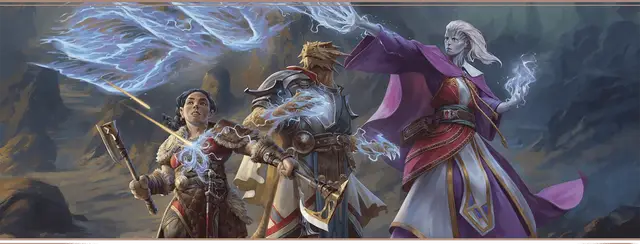

Посвящённый чаропламени
Spellfire Initiate

Характеристики Телосложение, Интеллект, Харизма
Черта Искра чаропламени
Навыки Восприятие, Тайная магия
Инструменты Игровой набор
Снаряжение Выберите А или Б: (А) Игровой набор (выбранный выше), Магическая фокусировка (Кристалл или Волшебная палочка), 2 Кошеля, Дорожная одежда и 36 ЗМ; или (Б) 50 ЗМ
Вы несёте в себе дар чаропламени, редкой формы магии, оперирующей чистой силой Плетения. Работа с чаропламенем тяжело сказывается на здоровье, и вы готовили как разум, так и тело, чтобы эффективно управлять этой священной силой.